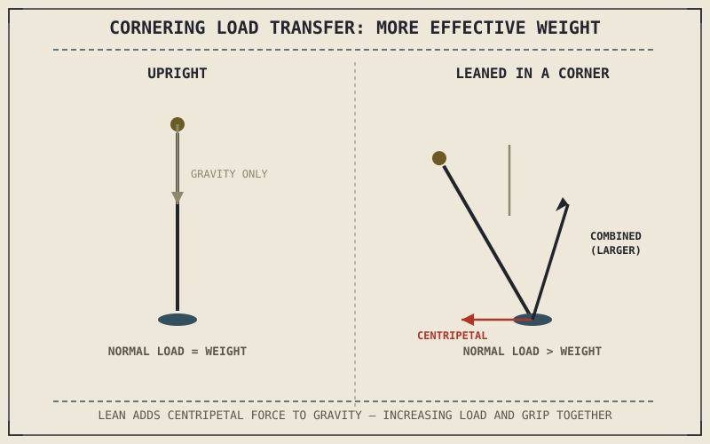

Chapter 7.5 showed weight shifting from the rear to the front tyre under braking. Cornering redistributes load too, but sideways rather than forward, shifting weight from the inside of the lean toward the outside — and unlike braking's front-rear split, a motorcycle doesn't actually have an "outside wheel" the way a leaning car does, which means this redistribution shows up differently than the load-transfer story Part VII already told.
Chapter 8.4 closed by promising this chapter would extend Part VII's load transfer discussion to cornering forces. This chapter is that extension.
Why Cornering Load Transfer Looks Different From Braking's
A car has four contact patches spread across a wide track, so cornering genuinely shifts load from its inside wheels to its outside wheels, each wheel still touching the ground independently. A motorcycle's two contact patches sit almost directly in line along its length, not spread side to side, so there's no separate "inside tyre" and "outside tyre" to shift load between the way a car has. Instead, cornering load transfer on a motorcycle shows up as an increase in the total normal force pressing both tyres into the road simultaneously, since the lean angle Chapter 8.3 and Chapter 8.4 established effectively adds the centripetal force's component to the vertical load the tyres already carry from gravity alone.
More Effective Weight, More Available Grip — And More Demand
This increased normal load expands the friction circle at both tyres simultaneously, the same relationship Chapter 6.4 and Chapter 7.5 both established between vertical load and available grip — a motorcycle leaned hard into a fast corner is, in a real sense, carrying more effective weight on its tyres than it would sitting still, and that added load is precisely what lets the tyre supply the larger static friction force the centripetal acceleration in Chapter 8.3 demands. This isn't a coincidence or a convenient side effect; it's the same physical relationship working to make hard cornering possible at all, since a fast corner both demands more centripetal force and simultaneously supplies more grip capacity to generate it, up to the tyre's genuine limits.
A motorcycle leaned hard into a corner isn't just asking more of its tyres — the lean itself is simultaneously increasing the effective load pressing those tyres into the road, expanding the very grip budget the corner is drawing on.

A leaned motorcycle shown with the combined vector of gravity and centripetal force resolved along the lean angle into an increased total normal load pressing the tyre into the road, compared to the smaller vertical-only load when upright.
A Common Misconception, Cleared Up Early
It's easy to assume cornering simply "uses up" a tyre's grip the same way braking does, treating the friction circle as a fixed budget being spent down. Cornering load transfer means the budget itself is growing at the same time it's being drawn on, since increased lean angle both demands more centripetal force and increases the normal load expanding the circle available to supply it. This is part of why cornering grip limits feel less abrupt than a sudden mid-corner loss of traction from an external cause, like a patch of gravel or oil, which removes available grip without correspondingly reducing the demand being placed on it.
Where This Leads
Cornering load transfer and braking load transfer from Part VII don't stay separate in real riding — trail braking into a corner asks a tyre to manage both at once. Chapter 8.6 turns to that combination directly.
Key Concepts to Remember
- Unlike a car, a motorcycle has no separate inside and outside wheel; cornering load transfer instead increases total normal load at both tyres simultaneously.
- Increased normal load from lean expands the friction circle at exactly the moment centripetal force demand is drawing on it more heavily.
- Cornering's grip budget grows with demand, unlike an external grip loss from surface contamination, which removes available grip without reducing what's being asked of the tyre.
Cross-References
| ← Ch. 7.5 | Established load transfer under braking as a front-rear redistribution; this chapter shows cornering producing a different kind of load transfer at both tyres. |
| ← Ch. 8.3 | Established centripetal force and lean angle; this chapter shows that same lean increasing normal load and available grip together. |
| ← Ch. 6.4 | Established that vertical load expands the friction circle; this chapter applies that relationship to cornering-induced load rather than braking-induced load. |
| → Ch. 8.6 | Covers combined load transfer when braking and cornering happen together, as in trail braking. |